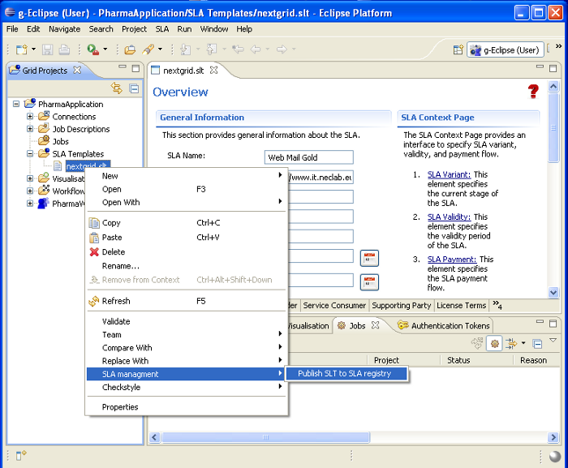

In a future service-based IT landscape on the Grid or Cloud, the dynamic negotiation of provisioning and usage of services will play an important role. g-Eclipse provides an extensible framework for the negotiation of Service Level Agreements (SLA) between service providers and service consumers.
The basic process of SLA negotiation contains the following steps:
This process it supported by the generic g-Eclipse SLA framework in the
sense that it is independent from a specific SLA schema as well as from a
specifc SLA negotiation implementations. The generic process does not support
any specific SLA schema editor as in this moment of time it is not clear how a
worldwide future SLA schema would look like. The step 1 of the SLA process is
independent of any real implementation. In step 2 a dedicated SLA editor based
on a dedicated SLA schema is used to create a Service Level Template (SLT),
which can be seen as a service offer. With a specific implementation for SLA
schemas, the SLT editor can be opened. The following figure shows the example
for the NextGRID schema.
When the SLT file is located on the workspace, the SLT can be published with
a specific SLA negotiation implementation. The g-Eclipse SLA framework provides
as standardized UI popup-menu contribution for *.slt files to do so. Click on
the SLT file and select
